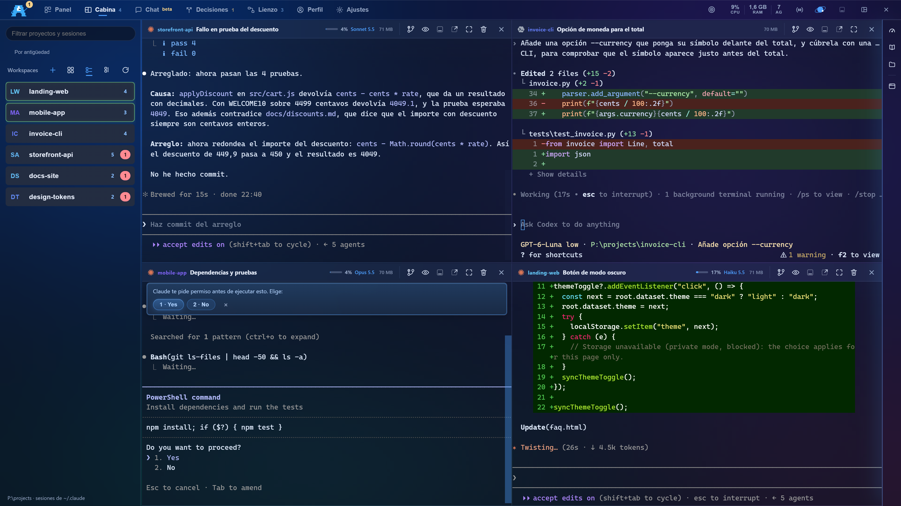
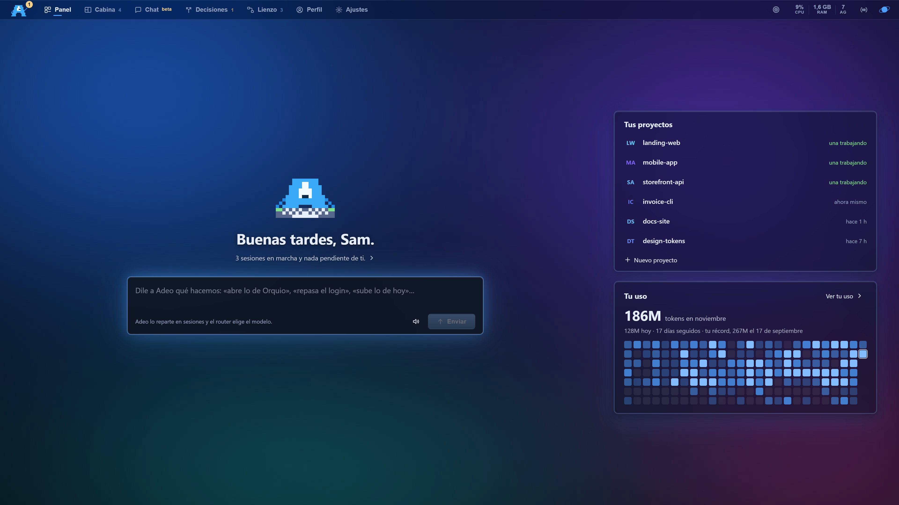
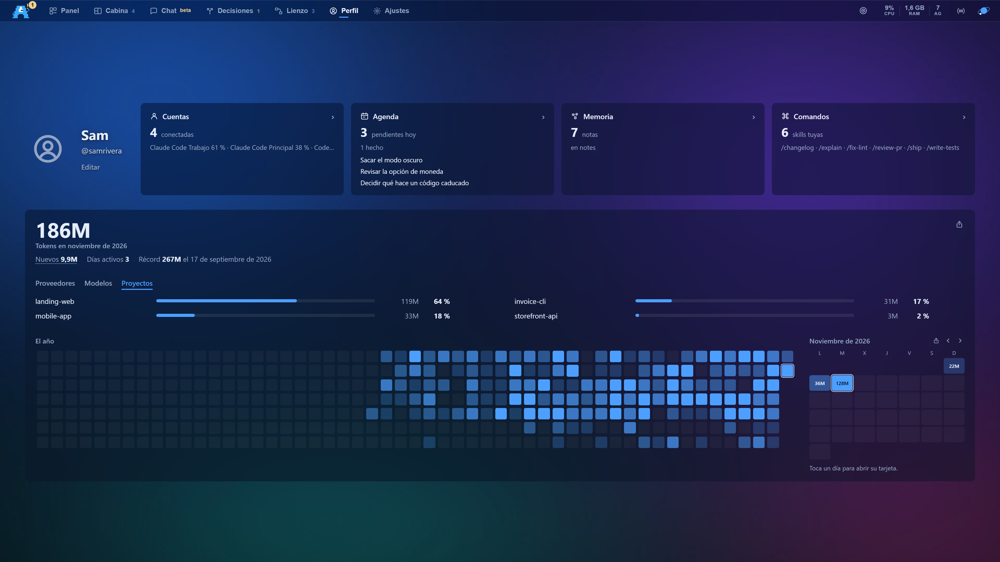
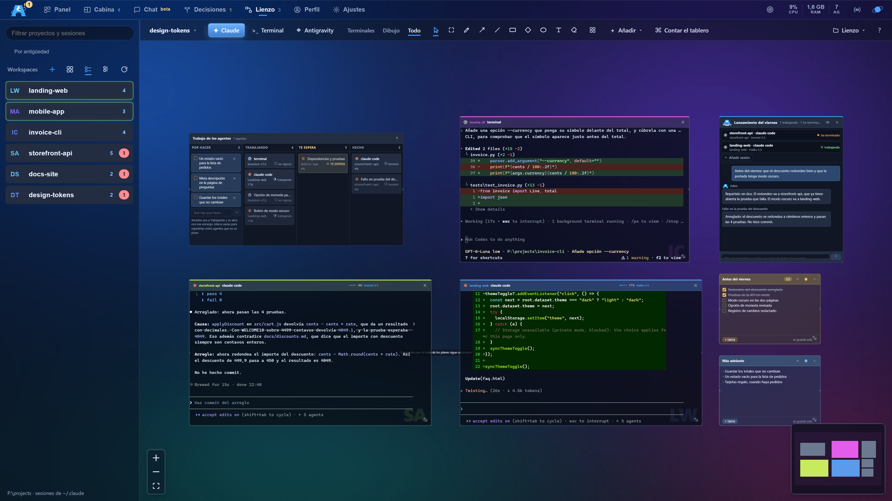
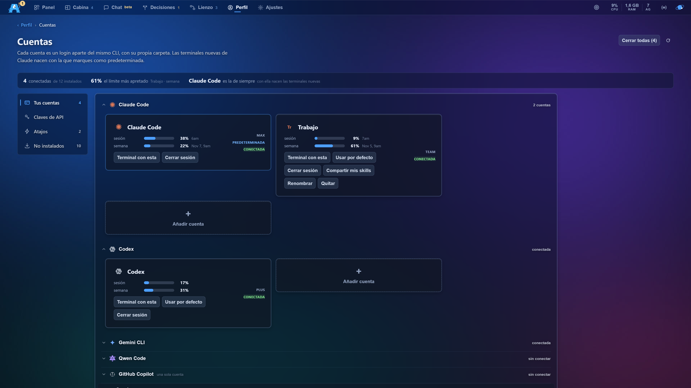

Documentación
Cómo se usa la cabina.
Adeorq es un panel de escritorio para Windows y Linux donde tus agentes trabajan en terminales de verdad, y que también se usa desde el móvil. Esta guía cuenta qué hace cada pantalla, en el orden en que te las vas encontrando. No hace falta leerla entera: el índice de la izquierda lleva directo a lo que buscas.
Qué es, y qué no es#
Adeorq no es un chat con una IA, y tampoco es otro editor de código. Es la sala donde caben los programas de agentes que ya usas: Claude Code, Codex, Gemini CLI, Antigravity y compañía. Funcionan muy bien y tienen un problema práctico: cada uno es una ventana negra suelta, y en cuanto abres cuatro pierdes de vista quién está trabajando, quién ha terminado y quién lleva diez minutos esperándote.
Adeorq los ejecuta tal cual, en terminales reales, y pone alrededor lo que les falta: tus proyectos a un clic, el estado de cada sesión, la agenda de lo que se te ocurre por el camino y una pantalla donde ves a todos a la vez.
Funciona con tus cuentas. Adeorq no incluye ni revende acceso a ningún modelo. Usa las suscripciones y las claves que ya tienes, y funciona en tu equipo: no hay un servidor de Adeorq por medio ni cuenta que crear para usarlo.
Por qué la línea de comandos y no una aplicación
Porque las novedades llegan antes. Opus 5 se podía usar en la terminal antes que en la aplicación de escritorio, y el contexto de un millón de tokens tardó bastante más en llegar allí. Adeorq monta la experiencia encima de esos programas, así que tienes lo último el mismo día, con cara de aplicación.
Instalar#
- Descarga el instalador desde la página de descargas.
-
Ejecútalo. Windows puede avisar de que no reconoce al editor: es lo normal en
programas sin firma comercial, y se pasa con
Más información → Ejecutar de todas formas. En Linux, el AppImage no se
instala: dale permiso de ejecución (
chmod +x) y ábrelo; o instala el.debo el.rpmde tu distribución. - Abre Adeorq. No hace falta crear ninguna cuenta. La bienvenida te pregunta tu nombre, dónde tienes los proyectos y qué programas usas, y se puede saltar.
A partir de ahí te avisa de cada versión nueva: la busca al arrancar y cada seis horas, y sale una tarjeta Actualizar Adeorq abajo a la izquierda. Un clic la baja y la instala; nunca instala sola. Los detalles, en Actualizar sin perder las terminales.
Requisitos: Windows 10 u 11 de 64 bits, o un Linux de 64 bits con glibc 2.35 o más (Ubuntu 22.04, Debian 12, Fedora 36 o posteriores). El instalador de Windows ocupa unos 6 MB, porque la aplicación es nativa y no lleva un navegador entero empaquetado dentro. En Mac hay un instalador todavía en pruebas: mira Windows, Linux y Mac.
Primeros pasos#
Con Adeorq recién instalado, el camino más corto para ver de qué va:
- Ve a Cuentas, dentro del Perfil. Adeorq mira qué programas de IA tienes instalados y te lo dice. Si te falta alguno, desde ahí se descarga.
- Ve a la Cabina y abre una terminal en uno de tus proyectos. Es una terminal normal: lo que escribirías en ella, escríbelo ahí.
- Vuelve al Panel. Tu proyecto ya sale con su sesión trabajando, y en la Agenda aparecerá con lo que esté haciendo.
La Cabina#
Es donde se trabaja. Cada panel es una terminal de verdad, con su programa dentro, y puedes tener las que quieras a la vez repartidas en columnas y filas.

La barra lateral
A la izquierda están tus proyectos, y dentro de cada uno sus sesiones. Cada sesión lleva la marca del programa que la escribió, así que ves de un vistazo cuáles son de Claude y cuáles de Codex. El color del punto dice en qué estado está:
| Estado | Qué significa |
|---|---|
| Trabajando | El agente está haciendo algo ahora mismo. |
| Te espera | Ha terminado su turno preguntando o pidiendo permiso. La pelota está en tu tejado. |
| Lista | Entregó lo que le pediste y no espera nada. |
| Dormida | Sin actividad en un par de días, pero se puede retomar. |
Esa distinción no es cosmética: cerrar un panel que te estaba preguntando algo pierde la pregunta, así que Adeorq lee el historial de la sesión para saberlo de verdad, en vez de adivinarlo por si suena la campana de la terminal.
La cabecera de cada panel
Cada terminal lleva encima lo que hace falta saber sin entrar a mirar:
- El contexto, en porcentaje. Cuánto lleva cargado esa conversación, medido contra la ventana real del modelo que estés usando, no contra un número fijo.
- El modelo con el que está trabajando.
- Los agentes desplegados, si esa sesión ha repartido trabajo entre subagentes.
- El modo espejo, que aísla lo que el agente escriba en una copia aparte del proyecto para que puedas revisarlo antes de aceptarlo.
El aviso de sesión cara. A partir de cierto tamaño, cada mensaje vuelve a pagar el contexto entero, y compactar paga de golpe todo lo acumulado. Adeorq avisa cuando una conversación llega ahí, para que la decisión de seguir o empezar de nuevo se tome con el dato delante.
La columna derecha
A la derecha de las terminales hay una franja de iconos. Los tres primeros abren una cara cada uno, y pulsar otra vez el de la cara abierta la esconde:
- Uso: cuánto le queda a cada una de tus cuentas, todas a la vez y la más gastada arriba, con cuándo se renueva cada ventana.
-
Skills: tus comandos de
~/.claude/skills, cada uno con lo que hace. Arrastra uno encima de una terminal y se pega en su caja; con un clic va a la que tienes delante. - Archivos: el árbol del proyecto, con el color de lo que git ve cambiado. Con el clic derecho creas archivos y carpetas, los renombras o los mandas a la papelera, y nunca pisa uno que ya existe. Al abrir uno sale en el editor, donde las imágenes y los PDF se ven como son. Para buscar un texto dentro del proyecto, Ctrl+K → Buscar en los archivos: el resultado se abre en su línea.
El Panel#
Lo primero que ves al abrir. A la izquierda, Adeo y una caja para pedirle lo que quieras con tus palabras («abre lo de Orquio», «repasa el login», «sube lo de hoy»): al enviarlo se abre una conversación nueva en el Chat, Adeo lo reparte en sesiones y el router elige el modelo. Encima, una frase con lo que está pasando; si una terminal te pregunta algo, lo dice, y Contestar te lleva a ella.
A la derecha, tus proyectos de la semana: primero el que te espera, luego los que trabajan y después el resto, por el último que tocaste. Un clic te lleva a su terminal. Debajo, tu uso del mes en casillas, que lleva al Perfil.

Proyectos
Nuevo proyecto, al pie de la lista. Adeorq deja la carpeta lista con
AGENTS.md (tus reglas para los agentes), docs/METAS.md y git
iniciado, para que la primera sesión empiece con contexto en vez de en blanco.
El Capataz
Lo abre el orbe de la barra de arriba (Ctrl+Mayús+A). Le pides el tablero en castellano («abre las sesiones del panel de Orquio», «un agente al frontend y otro al backend») y él propone el plan: qué sesiones abrir, con qué programa y con qué encargo. No ejecuta nada sin tu visto bueno.
Misión
Desde el Capataz, despliega un equipo. Describes qué quieres, eliges proyecto y roles (Frontend, Backend, Seguridad, Diseño) y se abre un agente por rol, cada uno con su cometido, su reparto de archivos y coordinados entre ellos por un fichero común del proyecto. Cada uno te propone su plan y espera tu aprobación antes de tocar nada.
El Chat#
Una pestaña, en beta, para trabajar hablando en vez de entre terminales. Tiene dos partes.
- Arriba, el conserje. «Hablar con el conserje» abre un chat con Adeo: le dices lo que quieres, él lo parte en trabajos y abre una sesión por cada uno. Las sesiones salen como pestañas encima del hilo (punto verde: trabajando; ámbar: te pregunta; naranja: terminó) y un clic entra en ellas. Cada una deja una tarjeta con su programa, su modelo, qué se le encargó y, si lo eligió el router, por qué.
- Debajo, tus sesiones de siempre, por días, con Nueva conversación y un buscador. Cada sesión se lee como una conversación (Limpio) o en crudo (Terminal), y lo que escribes abajo baja a la misma terminal. La caja lleva pastillas de modelo («Automático» deja que lo elija el router), de esfuerzo y un anillo con el contexto.
Lo que conviene saber:
- El conserje solo abre sesiones en carpetas reales de tus proyectos, solo escribe en las terminales que abrió él y como mucho abre cuatro por mensaje.
- Cada mensaje al conserje es una llamada corta con tu suscripción (Claude, o el programa que elijas en sus pastillas), no con una clave de API. Las sesiones que abre gastan su propia cuota. Mejorar reescribe tu mensaje sin añadir nada, y Parar lo corta mientras piensa.
- Apagar la parte «Chat» en Ajustes también quita la caja del Panel. No apaga el conserje del móvil, que tiene su propio interruptor (En el móvil).
Decisiones#
Cuando un agente necesita que elijas algo, te lo pregunta aquí en lugar de por el chat. La pestaña lista Te esperan y Anteriores. Cada pregunta trae de dos a seis opciones numeradas (la recomendada lleva «Recomendada») y una caja Otra cosa, con tus palabras.
- Enviar respuesta espera cinco segundos, con Deshacer, y luego la teclea en la terminal que preguntó, si sigue siendo la misma. Si no, el agente la lee cuando vuelva a mirar.
- Descartar la aparta sin contestar y avisa a la terminal que esperaba.
- Las anteriores se borran solas a la semana.
- El aviso es un número ámbar en la pestaña y Adeo con cara de duda. En el móvil emparejado llega un aviso y se contesta desde allí (En el móvil).
El Perfil y tu uso#
Tu nombre, tu @ y tu foto, que se cambian ahí mismo con Editar, y cuatro secciones con su resumen: Cuentas, Agenda, Memoria y Comandos. Al tocar un resumen se abre la sección entera, con «‹ Perfil» encima para volver. También se llega a cada una desde Ctrl+K.
Debajo, tu uso: los tokens del mes en curso, con la caché y solo los nuevos; cuánto se llevó cada proveedor, cada modelo y cada proyecto; el año en casillas y el mes día a día. Lo lee de las conversaciones que Claude Code y Codex ya guardan en tu equipo, sin ninguna clave.

La tarjeta para compartir
Tocar un día, tu récord o el icono de compartir abre Compartir tu uso: una tarjeta con tus cifras, lista para publicar. Eliges qué muestra (mes, día, récord o total), el fondo, el color y el formato (16:9 o 9:16), y la sacas como imagen o como vídeo. Ningún proyecto sale en ella si no lo eliges tú.
Siempre salen tu @ (o tu nombre), tu foto y, al pie, «adeorq.com · Hecho con Adeorq». En el vídeo, la cifra sube de cero a la tuya; recortas el tramo del fondo con dos tiradores y puedes ponerle sonido.
- Descargar guarda un PNG o un MP4 donde elijas.
- Copiar, en modo Imagen, copia la imagen al portapapeles para pegarla donde quieras. En modo Vídeo copia el archivo MP4: en Windows se pega como archivo en un chat o en una carpeta (y como su ruta en un sitio de solo texto, por ejemplo una terminal); en Mac, como referencia de archivo; en Linux, solo la ruta.
- En Linux la pestaña Vídeo está apagada: «Este equipo no puede sacar vídeo.»
La Agenda#
Vive dentro del Perfil. Lo que se te viene encima, lo que pensaste y lo que toca. Cada bloque lee de donde esa cosa ya vive, sin guardar una segunda copia de nada.
- Hoy: tus objetivos del día y todas tus sesiones, lo que te espera primero.
- Calendario: lo que tiene fecha porque la pone otro. Cada cosa avisa con la antelación que tú le pusiste, no con un umbral fijo.
- Ideas: las que tienes vivas o aparcadas, cada una con su condición de desbloqueo.
-
Próximos pasos: el
METAS.mddel proyecto que estés mirando, leído de su carpeta y ampliable desde aquí. - Encargos programados: un encargo que se lanza solo, los días y a la hora que digas o cada tantas horas. Si falla tres veces seguidas se para y te avisa, y no vuelve a correr hasta que lo rearmes tú. Por ahora, en Windows y con Claude.
La bandeja. Mientras trabajas salen cabos sueltos que no son de ahora. En vez de interrumpirte, caen en una bandeja que revisas cuando quieras: aceptas lo que sirve y descartas el resto. Un agente puede proponer ahí sin tocar ninguna credencial tuya.
Los objetivos del día#
Qué dos o tres cosas quieres dejar cerradas hoy. No pertenecen a ningún proyecto: son tuyas y del día, y mañana empiezas con la hoja en blanco sin que nadie limpie nada.
Están en la Agenda, y también en un panel flotante que se abre desde el icono de diana de la barra superior y se queda sobre la pantalla en la que estés. Lo puedes arrastrar por su barra de título hasta donde te convenga, plegarlo para que ocupe sólo una línea con el contador a la vista, o devolverlo a su esquina.
Un agente puede tacharlos. Los objetivos no viven en la configuración, sino en un archivo de texto por día. Un agente sabe editar un archivo de texto, así que cuando una terminal termina lo que le pediste puede marcar el objetivo como hecho, y el panel lo recoge solo sin recargar nada.
El Lienzo#
Un tablero infinito donde colocar terminales, notas, dibujos y widgets como si fueran piezas sobre una mesa. Sirve para pensar un trabajo con varias piezas a la vez, en lugar de en una rejilla fija.

- Terminales conectadas entre sí: cuando una acaba, puede pasarle el relevo a la siguiente con su respuesta.
-
Notas en Markdown con casillas, que también son archivos y que un agente puede marcar.
Una nota vacía te ofrece las fichas del proyecto (los
.mddedocs/fichas) para empezar con los pasos ya escritos. - El kanban: arrastras una tarjeta de «Por hacer» a «Trabajando» y se abre una terminal con ese encargo. Las otras columnas se llenan solas con lo que reporta cada agente.
- Widgets de trabajo: pomodoro, cronómetro, cuenta atrás, calculadora y un calendario con notas por día.
Las Cuentas#
Viven dentro del Perfil. Una cuenta es un inicio de sesión del mismo programa, con su propia carpeta de configuración. Puedes tener varias del mismo y repartir el trabajo entre ellas.

- Tus cuentas: una tarjeta por programa instalado, diciendo si está conectada. Claude Code, Codex y GitHub Copilot enseñan además sus barras de sesión y de semana, con la hora a la que se renuevan, y sale gratis; los demás programas no publican tu consumo en el equipo, y la tarjeta lo dice en vez de inventarse una barra.
- Claves de API: la otra forma de pagar lo que consume un programa: por tokens en vez de con tu suscripción. La clave se guarda en el almacén de claves de tu sistema (mira Dónde guarda tus cosas) y nunca vuelve a la pantalla: solo se ven sus cuatro últimas letras.
- Atajos: qué programas aparecen al pasar el ratón por un proyecto en la barra lateral.
- No instalados: lo que te falta, con su botón de descarga.
Varias cuentas tuyas, sin problema. Turnarte cuentas de otras personas para estirar los límites incumple los términos de los proveedores, y lo que te juegas es el cierre de la cuenta.
Qué programas admiten varias cuentas
Adeorq conoce una veintena de programas, pero solo ocho admiten varias cuentas:
Claude Code, Codex, Gemini CLI, Qwen Code, Grok, Pi, Kimi Code y CodeWhale. En esos se ha
comprobado que una variable de entorno mueve de verdad la carpeta del programa. Los
demás salen con la nota «una sola cuenta»: es preferible decirlo a inventarse un nombre
y que una cuenta acabe escribiendo donde no toca. Antigravity guarda su estado dentro de
~/.gemini y solo puede tener una.
El reparto entre cuentas
Cuando un agente abre una terminal con el MCP de Adeorq (más abajo) y no dice con qué cuenta, la terminal va sola a la cuenta de ese programa que más cuota perdería si se quedara sin usar: la que más semana le sobra comparada con los días que faltan para que se renueve. Así, una cuenta al 17 % que se renueva en dos días gana a otra al 60 % que se renueva en cinco.
- Se salta la cuenta parada por su tope de cinco horas o la que va por el 92 % de su semana o más, salvo que no quede otra. Si el modelo que pide el agente no lo da el plan de esa cuenta, prefiere otra.
- Si el agente pide una cuenta concreta, la terminal nace en esa o falla diciéndolo: nunca en otra en silencio. Un encargo programado sin cuenta no elige: va a la predeterminada.
- En pantalla lo ves en la cabecera de la terminal: la que no usa la cuenta principal lleva las tres letras de su cuenta.
- Hay un tope: seis terminales abiertas por agentes a la vez y doce por hora.
Vibecoding con OpenRouter (Aider)
La tarjeta de OpenRouter, dentro de Claves de API, es una sola clave que abre
modelos de muchos proveedores, incluidos los que no tienen CLI propio (Kimi, DeepSeek,
Grok…). Con la clave puesta, debajo aparece una segunda tarjeta, Vibecoding, que
abre una terminal real de Aider
apuntando al modelo que escribas ahí (por defecto, moonshotai/kimi-k3). La
primera vez el botón instala Aider solo; las siguientes, abre la terminal directamente
con la clave puesta.
Si abres Aider a mano, en vez de con el botón:
dile siempre el modelo (aider --model openrouter/<modelo>), porque sin
eso coge la primera clave que encuentre en tu entorno y prueba con OTRO proveedor, y
pon la clave en OPENROUTER_API_KEY en ESA terminal. La tarjeta hace las
dos cosas sola.
Ajustes#
Cómo se ve y cómo habla tu taller.
- Aspecto: idioma (español o inglés), 32 temas con filtro y buscador, el color de las terminales (también puedes traer un tema de Warp o de Ghostty), la suavidad del scroll, el modo rendimiento y el fondo: puedes poner una imagen o un vídeo detrás de todo, graduar cuánto se ve y hacer que las terminales sean transparentes para que la foto se vea a través del texto.
- Partes de Adeorq y La cabecera, también en Aspecto: apagas Cabina, Lienzo, Memoria o Chat enteras (sin pestaña, sin entrada en Ctrl+K y sin arrancar nada suyo; la Cabina y el Lienzo no se apagan a la vez, porque son los dos sitios donde se abre una terminal), y quitas o reordenas las pestañas de arriba.
- Terminales: tamaño de letra (de 11 a 32 px), cuántas sesiones abre de golpe un proyecto, recuperar lo que tenías abierto, que las terminales aguanten si Adeorq se cae, qué pasa al cerrar la ventana, con qué modo de permisos nace cada Claude nuevo y las tarjetas del MCP y de las claves de los agentes (las dos, en Lo que puede hacer un programa de fuera).
- Avisos: cómo te avisa cuando un agente termina o te pregunta, qué modelo usa por defecto (o que decida Adeorq) y dos ayudas que solo dejan propuestas en la bandeja de la Agenda y nunca cambian nada solas: el vigía de las cuadrillas y el copiloto de las sesiones.
- Atajos: la tabla editable de los 31 atajos del lienzo. Los demás atajos no se cambian (mira Atajos).
- Modelo local: si tienes Ollama, Adeorq lo usa para tareas pequeñas sin gastar cuota.
- Discord: para que tu estado en Discord diga en qué estás trabajando.
- Mods: cambios tuyos en cómo se ve Adeorq, apagados de fábrica. Solo cambian el aspecto; si uno te deja la pantalla inservible, Ctrl + Alt + Mayús + 0 los apaga todos.
- Ayuda: el recorrido y la bienvenida otra vez, la guía completa dentro de la aplicación, el enlace a esta documentación y «Que me la explique mi agente», que abre una sesión con la guía delante.
-
Adeorq: tu nombre y la carpeta de tus proyectos, la versión instalada y
Buscar actualizaciones (solo busca; el resto, en
Actualizar sin perder las terminales), y
Ver mi uso semanal, que escribe
/usageen la terminal de Claude que tengas activa y te lleva allí. - Móvil: Adeorq en el móvil o en otro navegador, estés donde estés. Los pasos, en En el móvil.
Lo que puede hacer un programa de fuera#
Adeorq tiene una puerta local, el MCP, por la que un programa de IA puede mirar y manejar tus terminales: listar proyectos y terminales, leer lo que se ve en una, abrir una nueva, escribirle, preguntarte algo con opciones (que llega a Decisiones y al móvil) y consultar tu cuota y tus notas de la Memoria. Son dieciocho herramientas, repartidas en tres escalones:
| Escalón | Qué puede hacer |
|---|---|
| Solo mirar | Lee terminales, proyectos, la agenda, la cuota y la memoria. No cambia nada. |
| Abrir y mirar | Además abre terminales nuevas, dibuja flechas entre dos del lienzo, te hace preguntas y cierra las que abrió ese mismo programa. No escribe en las de otros. |
| Todo | Además escribe en cualquier terminal, la cierra y puede compactarla. |
Cómo conectas tu Claude Code a estas herramientas. Adeorq no toca la
configuración de tu Claude Code: se la das tú, una vez, con
claude mcp add adeorq --scope user -- "<ruta de adeorq.exe>" --mcp
(la ruta es la de la carpeta donde instalaste Adeorq). Hace falta que Adeorq esté
abierta: con ella abierta, claude mcp list tiene que decir «Connected».
Desde entonces, un Claude Code que abras en una terminal de Adeorq tiene las
herramientas con el escalón de esa terminal, y uno de otra consola las tiene como
programa de fuera (más abajo).
Cada terminal nace con su propia contraseña, y el escalón sale de la terminal desde donde se conecta el programa, no del nombre que dice tener: un programa que se presenta como «claude» desde fuera no hereda el escalón de Claude Code. De fábrica, Claude Code tiene «Todo» y los demás programas tienen «Abrir y mirar».
Fuera de Adeorq es todo lo que llega sin la contraseña de una terminal de Adeorq: un Claude Code abierto en otra consola, cualquier programa que hable con el puerto. De fábrica solo puede abrir terminales y mirar. Esas terminales nacen en el modo que tengas en Ajustes, y si pide abrir una con un encargo sale una ventana con el texto, quién lo pide y en qué carpeta: No o Abrir; si nadie contesta, no se abre. Para que haga más, súbelo tú en Ajustes → Terminales → Qué puede hacer cada cliente por el MCP, en su fila; vale para cualquier programa de fuera, y en «Todo» ya no pregunta, así que súbelo con cuidado (Como de fábrica lo devuelve). Cada fila dice el programa, su versión, cuántas veces se conectó y cuándo fue la última. El Capataz y el conserje entran por una línea propia y no cuentan como clientes.
Un programa con un escalón bajo que pida algo que no le toca recibe un rechazo que le dice qué escalón tiene y dónde se cambia.
Límites: un agente abre como mucho seis terminales vivas a la vez y doce por hora; un mensaje nuevo a una terminal de Claude con más de 300.000 tokens de contexto se le devuelve y solo sale si insiste; no puede compactar una que abrió una persona; y las terminales que abre un agente las cierra él cuando acaba, dejando un resumen en la carpeta de datos.
Pedir una clave sin enseñarla
Cuando un agente necesita un token, no se pide por el chat ni se deja en un
archivo. Sale una ventana de Adeorq donde lo pegas, y el agente no lo lee ni queda en
su historial. El agente la usa con
adeorq secreto <nombre> -- <comando>: el comando recibe la clave
en una variable de entorno y su salida sale con *** donde habría salido la
clave.
- Una terminal de Adeorq que pide una clave ya guardada la recibe sin preguntar. Si no estaba guardada, sale la ventana Un agente necesita una clave, con una casilla para guardarla la próxima vez.
- Un programa de fuera de Adeorq que pide una clave guardada hace salir otra ventana: «No viene de una terminal de Adeorq. Dásela solo si sabes qué programa es.» Eliges No o Dársela esta vez.
- Claves de los agentes (en Ajustes → Terminales) lista cada clave guardada con quién la usó y cuándo, y un botón Olvidar. Nunca enseña el valor, y la tarjeta no sale si no hay ninguna guardada.
- Dónde se guardan, en Dónde guarda tus cosas: en el almacén de claves de cada sistema y, en Linux, en un archivo sin cifrar.
Lo que esto no hace.
El filtro *** solo reconoce la clave tal cual, así que no para a un agente
decidido a sacarla (por ejemplo, con un comando que la codifique antes de imprimirla), y
cualquier programa que corra con tu usuario puede leer el Gestor de Credenciales (o el
Llavero) directamente, sin pasar por Adeorq. Es una barrera contra accidentes y
lecturas casuales, no contra un agente en el que no confías: a ese no se le da la clave.
En el móvil#
Adeorq se viene contigo. Desde el móvil, una tablet u otro ordenador hablas con el conserje, ves cómo va cada terminal y le escribes, contestas lo que te preguntan tus agentes, adjuntas fotos y archivos, y te llega un aviso cuando un agente termina o te pregunta. Lo que ves es tu PC, no una copia en la nube: tiene que estar encendido y con Adeorq abierto.
Se prepara una vez
- Instala Tailscale en el PC y en el móvil, y entra con la misma cuenta en los dos. Es una red privada entre tus aparatos, gratis para uso personal.
- En Adeorq, abre Ajustes → Móvil y enciende el interruptor junto a El conserje en el móvil. Salen tres filas, Este PC, Tailscale y Tu móvil, cada una con su punto: la que falla te dice qué hacer.
- Si la fila de Tailscale dice que falta llevar el conserje a tu red, pulsa Llevar el conserje a Tailscale; se queda puesto aunque reinicies. La primera vez Tailscale puede pedirte activar HTTPS en tu cuenta: si sale Abrir el enlace de Tailscale, púlsalo, actívalo y vuelve a pulsar.
-
Debajo sale un QR con tu dirección, del estilo
https://tu-pc.tu-red.ts.net:8443, y al lado la misma dirección para copiarla. Pulsa Emparejar un móvil: sale un código de seis cifras que vale diez minutos. - En el móvil, con Tailscale encendido, escanea el QR o escribe la dirección, pon el código y pulsa Emparejar. Cada navegador se empareja una sola vez.
Lo que ves en el móvil
- El menú. Como en la app de Claude: el botón de arriba a la izquierda, o deslizar el dedo desde el borde izquierdo, abre un cajón con Conserje, Terminales, Decisiones, Programados y Uso. Debajo, lo reciente (terminales y conversaciones), si tu PC está conectado y Nuevo encargo; abajo del todo, Ajustes.
- El inicio. Adeo te recibe y te dice de un vistazo cómo va tu PC. Debajo, Te esperan: las decisiones pendientes y las terminales que te preguntan. Luego En marcha, solo lo que trabaja ahora mismo, con un hilo de luz azul alrededor, y tus conversaciones con el conserje. Abajo, la caja para encargarle algo. Si una decisión te espera, su número sale en un globito sobre el botón del menú.
- Terminales. Las que tienes abiertas en el PC, por cómo están: Te preguntan, Trabajando, Terminaron y En reposo. En cada una lees lo que pasa y le escribes, con fotos o archivos si hace falta; en las de un agente, Chat trae todo lo hablado y Pantalla, lo que se ve ahora en el PC.
- La caja de una terminal. Admite texto, fotos y archivos, y lleva solo tres mandos: Parar (hace lo que Esc en el PC, mientras el agente trabaja), una pastilla de modelo y esfuerzo y Modo (lo que Mayús+Tab en Claude Code: cambia el modo de permisos). Cada uno sale solo si ese programa lo entiende.
- Abrir sesiones del PC. En el menú, Nueva sesión aquí en cada proyecto, Otro proyecto… y seguir una sesión de antes. Solo en carpetas que son proyectos tuyos y con programas conocidos.
- Decisiones. Cuando un agente necesita que elijas algo, te lo pregunta con sus opciones numeradas y te llega un aviso. Lo contestas con una opción o con tus palabras, tienes cinco segundos para deshacerlo, y la respuesta vuelve sola a la terminal que preguntó. Si no vas a contestar, Descartar la quita y avisa a su terminal para que no espere. Las que ya no te esperan pasan a Anteriores y a la semana se borran solas.
- Programados y Uso. Para mirar de un vistazo: los encargos que se lanzan solos, activos y parados, cuándo se lanzan y por qué paró uno; y lo que lleva gastado cada cuenta, con su barra. Se cambian en el PC.
- Borrar una conversación. Mantenla pulsada, en el inicio o en el menú, y elige Borrar conversación.
Ajustes, abajo del menú
- Cómo se ve. La foto de fondo que hay detrás del cristal: de entrada, la misma que tienes en el PC, o una de la galería del móvil, y cuánto se desenfoca y se oscurece. Claro, oscuro o como el teléfono, y el color de acento, que de entrada es el del tema del PC.
- Cómo se lee. El tamaño de la letra, Adeo moviéndose, quieto o escondido, y qué secciones salen en el inicio y en qué orden.
- Avisos. Los pones en este móvil y eliges cuáles quieres: cuando una sesión te pregunta, cuando termina y los de los encargos programados, con sonido o en silencio. Llegan aunque tengas la página cerrada, cifrados por el servicio de avisos de tu navegador (Google, Apple o Mozilla), que los entrega sin poder leerlos. En iPhone solo funcionan con la app añadida a la pantalla de inicio. Para probarlos, en Ajustes → Móvil del PC cada móvil con avisos trae Probar aviso.
- Como una app. En Android la instalas desde Ajustes y queda con su icono (si no sale, el menú del navegador → Añadir a la pantalla de inicio). En iPhone, desde Safari: Compartir → Añadir a la pantalla de inicio.
- Varios aparatos. Cada uno se empareja por su lado y sale con su nombre en Ajustes → Móvil del PC, con cuándo se vio por última vez; desde ahí lo quitas. En el propio móvil, sus Ajustes también te dejan olvidarlo: para volver a entrar hará falta un código nuevo.
Por qué se puede dejar encendido. Adeorq solo escucha dentro de tu PC, y Tailscale lo lleva hasta tus aparatos por un túnel cifrado: desde internet no se ve. Aun así, cada petición lleva la clave de un aparato emparejado, el código caduca a los diez minutos o a los cinco fallos, y en el disco solo queda la huella de cada clave. Mientras está encendido, el PC no se duerme solo; con batería, sí.
Si algo no va
- La dirección no carga: mira que Tailscale esté encendido en el móvil. La fila Tu móvil de Ajustes → Móvil te dice si está en tu red y cuándo se vio por última vez.
- «La ventana de Adeorq no contestó a tiempo»: Adeorq tiene que estar abierto en el PC, y el PC despierto.
-
En Linux, «Tailscale no deja a tu usuario ponerlo»: ejecuta una vez
sudo tailscale set --operator=$USERy vuelve a pulsar.
El modo emisión#
Pensado para grabar o compartir pantalla sin regalar tus claves. Se activa con Ctrl + Mayús + E (o con su botón, solo con icono, en la barra de arriba) y tiene cuatro piezas:
- Tapado, no desenfoque. El pie de la barra lateral, el resumen del Capataz, los nombres de cuentas y los textos de la Agenda se cubren con una barra sólida. Los títulos de tus sesiones y los objetivos del día no se tapan, a propósito: son el hilo de lo que estás haciendo, y sin ellos el directo no se entiende.
- Alt para mirar. Mantén Alt para ver lo tapado; al soltarlo, o al cambiar de ventana, se vuelve a tapar. El ratón por encima no revela nada.
-
El escudo en las terminales. Lo que escribe el agente se revisa antes de
pintarse y se cambia por ●●● lo que tiene forma de clave: claves de Anthropic, OpenAI,
AWS o Google, tokens de GitHub y Slack, JWT, claves privadas, contraseñas dentro de una
cadena de conexión, variables tipo
API_KEY=…, tu correo y tu usuario en las rutas. El agente sí recibe el texto real: solo se oculta a la vista. Cuando tapa algo sale una tarjeta abajo a la derecha, «Tapé algo que parece…», con un consejo y el botón Entendido. - La cortina, Ctrl + Mayús + P. Tapa la ventana entera al instante; vuelve con un clic o con las mismas teclas. Solo se pone a mano: el escudo no la baja por su cuenta.
También puedes tapar una sola terminal, con el ojo de su cabecera o con el clic derecho (Tapar esta terminal (para emitir)).
Lo que no hace. No arregla lo que ya salió antes de activarlo, no tapa tu navegador ni las notificaciones del sistema, y ninguna lista de patrones es completa. Lo que más protege sigue siendo un retardo de 30 segundos en OBS.
El pulso#
Arriba en la barra, una píldora con tres cifras: cuánta CPU y cuánta memoria (RAM) están gastando Adeorq y sus agentes, y cuántos agentes hay vivos (AG), que es el número que dice si te has dejado algo abierto. Un clic abre Lo que gasta Adeorq, con el detalle.
Mide el árbol entero de procesos, no sólo la ventana, porque lo que de verdad pesa son los programas que cuelgan de ella. Y lo compara con lo que tiene tu equipo: se pone ámbar cuando Adeorq usa un cuarto o más de la CPU o de la memoria del equipo, y rojo cuando el equipo entero va al 90 % o Adeorq por sí solo pasa del 50 % de CPU.
Actualizar sin perder las terminales#
Adeorq mira si hay versión nueva al arrancar, cada seis horas y al volver a la ventana, y te avisa de dos maneras: una notificación del sistema (una vez por versión) y una tarjeta Actualizar Adeorq con la versión, al final de la barra lateral, abajo a la izquierda. Si la barra está encogida a una tira, solo avisa la notificación. Un clic descarga la versión, con su porcentaje, y la instala; después dice Reinicia para estrenar. La ✕ (Ahora no) la esconde. No instala nada sin que pulses.
Si hay agentes trabajando cuando vas a instalar o a reiniciar, la tarjeta dice Espera a que terminen y quién anda a medias, y sigue sola cuando acaban. Si pulsas otra vez, no espera.
«Las terminales siguen vivas» quiere decir que tus consolas y tus agentes siguen
con lo que hacían: un pnpm dev sigue corriendo y Claude no vuelve a
arrancar. Las terminales viven en un proceso aparte que el instalador no cierra, y la
ventana nueva las recoge con su historial. Los límites, dichos claros:
- Solo en Windows, en la app instalada y con el ajuste Que las terminales aguanten si Adeorq se cae encendido (de fábrica sí). En Linux y Mac está apagado de fábrica.
-
Sin ese proceso aparte, actualizar cierra las terminales: a los Claude se les
despide con Ctrl+C y se retoman con
--resume, y una consola pierde lo que tuviera en marcha. - Lo que cierras tú las mata: cerrar Adeorq del todo, o cerrar las terminales. Y si Adeorq muere de golpe, las terminales aguantan media hora; si nadie vuelve, se cierran solas.
- El proceso aparte es de la versión en la que nació. Tras actualizar, la ventana es nueva pero ese proceso sigue siendo el viejo, y las terminales que abras después en esa sesión nacen también en él hasta que salgas de Adeorq del todo. Lo nuevo de la versión que dependa de ese proceso no llega a ellas, así que tras actualizar conviene salir de Adeorq del todo en cuanto puedas.
Sin probar con un instalador real. Que las terminales sobrevivan a la actualización está leído en el código, pero todavía no se ha probado con un instalador de verdad. Si al actualizar te pasa algo distinto de lo que se cuenta aquí, avísalo.
Windows, Linux y Mac#
Adeorq se usa igual en los tres, con estas diferencias.
Windows
Es donde más se usa y donde está todo: el motor de terminales en un proceso aparte, el navegador de verdad, la música, el segundo plano con icono, el reloj de los encargos programados y el Gestor de Credenciales.
Linux
Se publican AppImage, .deb y .rpm (en Fedora conviene el
.rpm; el AppImage lleva su propio motor web). La ventana es translúcida y
pide un escritorio con compositor. Las diferencias que verás:
- Las claves van a un archivo con permisos 600, sin cifrar (la pantalla lo dice).
- No hay control de música.
- Al darle a la X con terminales abiertas ofrece Seguir en segundo plano: la ventana se esconde, sin icono, y vuelve al abrir Adeorq otra vez.
- El navegador del panel es una versión sencilla en un marco, no el Chromium de verdad.
- Las terminales no van de fábrica en un proceso aparte.
- La pestaña Vídeo de la tarjeta de uso está apagada.
Mac
Hay un instalador .dmg para Apple Silicon (macOS 12 o más) entre las
versiones publicadas. Está construido y arrancado en un Mac automático, pero todavía
no se ha usado a diario en un Mac real: si algo falla, cuéntalo.
- Las claves van al Llavero de inicio de sesión (servicio «Adeorq»). Adeorq mueve al Llavero las que estuvieran en un archivo y solo borra el archivo cuando ha comprobado que la clave leída de vuelta es idéntica.
- La barra de título sigue el tema de Adeorq (clara u oscura) en lugar del modo del sistema.
-
Los datos viven en
~/Library/Application Support/Adeorq. Las consolas usan zsh, y una app abierta desde el Finder hereda el PATH de tu shell de usuario, para encontrar tus programas. - Los atajos usan la tecla Control, no ⌘ (pendiente de revisar con un Mac delante).
- Como en Linux: sin control de música, navegador sencillo y terminales sin proceso aparte de fábrica. Al cerrar la ventana se cierra Adeorq y se lleva sus terminales.
Atajos#
| Atajo | Qué hace |
|---|---|
| Ctrl + K | La paleta: escribe y ve a cualquier pestaña, terminal abierta o proyecto, o lanza cualquiera de estos atajos. Funciona también dentro de una terminal |
| Ctrl + P | Abrir un archivo del proyecto por su nombre (dentro de una terminal esa tecla es del programa: ahí, por Ctrl+K) |
| Ctrl + Mayús + T | Terminal nueva, en la carpeta de la activa |
| Ctrl + Mayús + → | Partir la terminal activa a la derecha |
| Ctrl + Mayús + ↓ | Partir la terminal activa hacia abajo |
| Ctrl + Mayús + F | Maximizar o restaurar la terminal activa |
| Ctrl + Mayús + A | Llamar al Capataz |
| Ctrl + Mayús + M | Llamar al Capataz y dictarle |
| Ctrl + Mayús + E | Modo emisión |
| Ctrl + Mayús + P | Tapar la pantalla entera |
| Alt (mantener) | Mirar debajo del modo emisión |
| Ctrl + Z | Reabrir la última terminal cerrada (fuera de una terminal y de un cuadro de texto) |
| Ctrl + Alt + Mayús + 0 | Apagar todos los mods |
| Ctrl + C / Ctrl + V | En una terminal: copiar (si no hay nada seleccionado, Ctrl+C va al programa) y pegar |
| Ctrl + F | En una terminal: buscar dentro de ella. No le llega al agente |
| Esc | Cerrar lo que esté abierto encima |
Estos no se pueden cambiar. Los del lienzo, sí, en Ajustes → Atajos: son 31 acciones (por ejemplo Alt + C abre un Claude, Alt + T una terminal, y V, P, F… son las herramientas de dibujo). Solo actúan con el lienzo delante y con el foco fuera de una terminal y de un cuadro de texto, y Volver a los de fábrica lo deja todo como venía.
Dónde guarda tus cosas#
Todo en tu equipo, y en formatos que puedes abrir por tu cuenta. La carpeta de datos de
Adeorq es %LOCALAPPDATA%\Adeorq en Windows,
~/.local/share/adeorq en Linux (o donde diga XDG_DATA_HOME) y
~/Library/Application Support/Adeorq en Mac. Dentro:
| Qué | Dónde (dentro de esa carpeta) |
|---|---|
| Objetivos del día | objetivos, un Markdown por día |
| Notas del lienzo | notas, en Markdown |
| El Lienzo | lienzo.json |
| Encargos programados | programados.json |
| Decisiones y chats | decisiones, conserje y chats |
| Ideas de los agentes | bandeja.md, las ideas y pasos que proponen |
| Rastro de fallos | rastro.log |
| Terminales cerradas | rastros, el resumen de cada terminal que cerró un agente |
| Cuentas de cada programa | accounts, una carpeta por cuenta |
| Mods | mods |
| Móviles emparejados | movil.json, solo la huella de cada uno |
| Adjuntos del móvil | pastes, también las capturas pegadas |
| Claves de API y de agentes | Gestor de Credenciales de Windows, Llavero de Mac o, en Linux, la carpeta secretos (permisos 600, sin cifrar) |
| Sesiones e historiales | Donde los deja cada programa (~/.claude para Claude Code): Adeorq los lee, no los copia |
| Tus ajustes de ventana | Tema, letra, cabecera, partes y disposición de la Cabina viven en el almacén de la propia ventana, no en un archivo de esa carpeta |
Dudas frecuentes#
¿Necesito una cuenta de Adeorq?
No hace falta ninguna cuenta. Adeorq se usa sin crear nada, y no te pide nada al instalarlo. Los programas que ejecuta (Claude Code, Codex…) sí tienen las suyas.
¿Sustituye a Claude Code o a Codex?
No: los ejecuta. Adeorq no toca lo que esos programas hacen ni cómo lo hacen; pone la sala alrededor. Si mañana sacan una función nueva, la tienes el mismo día.
¿Se lleva mis datos a algún sitio?
No hay telemetría ni analíticas, y lo que ves se guarda en tu equipo. Adeorq sale a internet solo en estos casos:
- Para buscar actualizaciones: pregunta a GitHub al arrancar, cada seis horas y al volver a la ventana.
- OpenRouter, solo si guardas tu clave: comprobar la clave y el saldo, listar modelos, hablar con uno y generar la voz del Capataz.
- La brújula de la Agenda (fechas e ideas), solo si entras en ella con una cuenta de munito.dev.
- Los avisos al móvil, si los activas: van cifrados por el servicio de avisos de tu navegador (Google, Apple o Mozilla).
- Los avisos a un bot, solo si los enciendes en Ajustes → Bots: el webhook de tu Grok Bot (la dirección que pegas tú) o el Hermes u OpenClaw de tu equipo, que sale por su cuenta.
- El móvil va por Tailscale, su red privada, no por servidores de Adeorq.
- Lo que abres tú: el navegador del panel y las ventanas web del lienzo cargan la página que pongas, y los agentes (Claude Code, Codex…) y el conserje salen a internet por el programa de cada uno, no por Adeorq.
Ollama, Discord, la voz local y los servidores del móvil y del MCP se quedan dentro de tu equipo.
¿Puedo usar dos cuentas del mismo programa?
Sí, siempre que sean tuyas y que el programa lo admita (hoy, siete: mira Las Cuentas). Cada una vive en su carpeta de configuración y no se pisan.
¿Qué pasa si cierro un panel con un agente trabajando?
Se cierra el programa y todo lo que colgara de él. Si estaba a mitad de un turno, ese trabajo se pierde: mira el estado del panel antes de cerrarlo. La conversación no se borra y se puede retomar.
Windows dice que el instalador no es seguro
Es el aviso estándar para programas sin firma comercial de pago. El instalador va firmado con la clave del actualizador de Adeorq, que es lo que garantiza que la actualización que te llega es la nuestra.
No me sale la Cabina (o el Lienzo, la Memoria o el Chat)
Está apagada en Ajustes → Aspecto → Partes de Adeorq, o quitada de la cabecera en La cabecera. Ctrl+K te lleva igual.
Una terminal mía no deja que otro programa escriba en ella
Es el escalón del MCP: de fábrica, lo que llega de fuera de Adeorq solo abre terminales y mira. Está contado en Lo que puede hacer un programa de fuera.
¿Falta algo en esta guía o algo no funciona como se cuenta aquí? Dilo y se arregla.
Avisar de un fallo